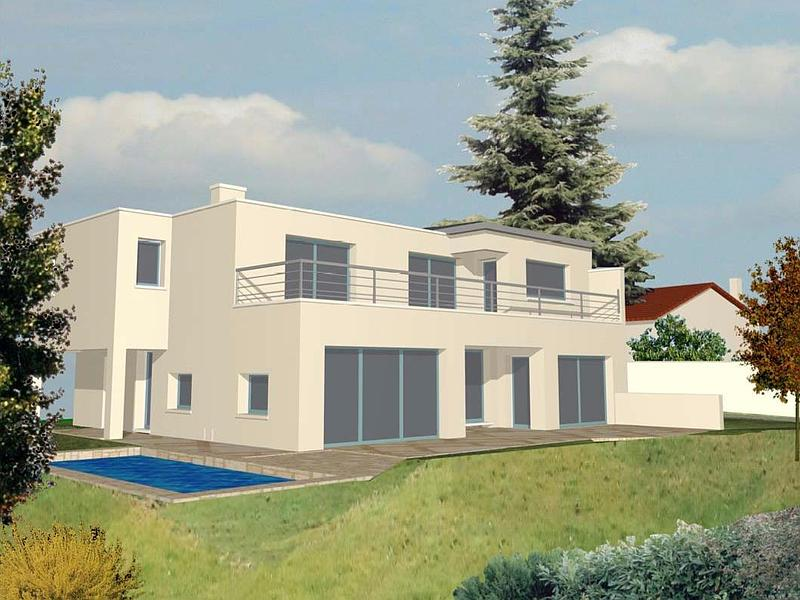

Nouveau programme de promotion près de Rueil-Malmaison

En tant que promoteur, Procept accompagne le montage de programmes immobiliers : recherche de terrain, étude de faisabilité, permis, coordination et commercialisation.
Un nouveau projet près de Rueil-Malmaison illustre notre approche en deux phases — montage puis réalisation — pour des maisons haut de gamme clé en main.
Le contrat de promotion immobilière formalise les engagements : délais, qualité et accompagnement des acquéreurs jusqu’à la livraison.
Pour toute demande de promotion immobilière dans l’ouest parisien, notre équipe reste à votre écoute à Mareil-Marly.